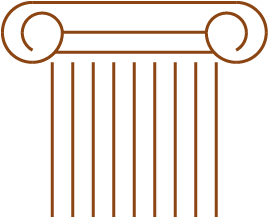

Piazza Luigi Pirandello

STORIA/ARTE: Il legame è nel nome del municipio: Palazzo dei Giganti. Si chiama così perché ospita i resti dei Telamoni (i giganti di pietra) che un tempo sorreggevano l'immenso Tempio di Giove Olimpico.
L’eleganza dell’Istituzione
Piazza Luigi Pirandello rappresenta il fulcro della vita amministrativa e culturale di Agrigento. Situata all’inizio della storica Via Atenea, la piazza è concepita come un salotto monumentale, un’apertura di grande respiro architettonico che accoglie il visitatore tra edifici di imponente bellezza neoclassica e scorci panoramici che guardano verso il mare e la Valle.
Il Palazzo dei Giganti
L’edificio che domina la piazza è il Palazzo Municipale, noto come il Palazzo dei Giganti. Originariamente nato nel XVII secolo come convento dei Padri Domenicani, il palazzo fu trasformato in sede del Comune nel 1867. La Struttura: La facciata austera ed elegante, con le sue ampie finestre e il portone monumentale, racchiude al suo interno un suggestivo chiostro. Perché "Giganti"? Il nome richiama i colossali Telamoni del Tempio di Giove Olimpico, i "Giganti" di pietra che sostenevano le strutture dell'antica Akragas, creando un legame indissolubile tra la città moderna e il suo glorioso passato greco.
L'ingresso al Teatro: Un Tempio della Cultura
Attraversando l'atrio del Palazzo dei Giganti, si accede al Teatro Luigi Pirandello. Costruito nel 1870 da Giovan Battista Basile (lo stesso architetto del Teatro Massimo di Palermo), il teatro è un gioiello di architettura ottocentesca. La sua presenza trasforma la piazza da semplice spazio urbano a luogo dell'anima e dell'arte, dove la facciata del palazzo funge da "quinta teatrale" per la vita cittadina.
Il Luogo della Memoria Pirandelliana
Passeggiare in questa piazza significa camminare sui passi di Pirandello. È qui che si respira quell'atmosfera di introspezione e ironia che caratterizza lo scrittore agrigentino. La piazza è il simbolo di una città che ha saputo trasformare il proprio isolamento in una voce universale. Ogni angolo della piazza, dalle scalinate alle panchine, sembra pronto a ospitare uno dei "Personaggi in cerca d'autore".
Il Belvedere sulla Valle
Uno degli aspetti più emozionanti di Piazza Pirandello è la sua posizione strategica. Affacciandosi dai parapetti che delimitano lo spazio, lo sguardo scivola giù per la collina di Girgenti fino a incontrare le colonne dorate della Valle dei Templi e, più lontano, l'azzurro del Mar Mediterraneo. Un punto di osservazione unico: È il luogo dove i cittadini si fermano a contemplare il tramonto, osservando come la luce del sole incendi i templi greci, ricordando a tutti che Agrigento è una città eterna sospesa tra il cielo e il mare.
Il Centro della Vita Sociale
Oggi Piazza Pirandello è il punto di partenza preferito per lo struscio serale lungo la Via Atenea. È un luogo vibrante, dove si tengono eventi istituzionali, cerimonie e manifestazioni culturali. Qui il silenzio del chiostro comunale si mescola al brusio dei caffè e al viavai degli studenti e dei turisti, rendendola un'agorà moderna nel senso più autentico del termine: un luogo di incontro, di confronto e di bellezza.